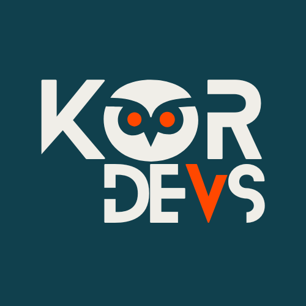

Entenda
O conceito começa em linguagem comum antes de aparecer no código.
O QuizADS transforma conteúdos de Análise e Desenvolvimento de Sistemas em aulas guiadas, exemplos visuais, prática e desafios progressivos. Sem presumir que você já domina programação.

O conteúdo é apresentado em etapas. Durante o aprendizado, consultar a aula e pedir uma dica faz parte do processo. A avaliação vem depois.
O conceito começa em linguagem comum antes de aparecer no código.
Diagramas e exemplos tornam ponteiros, listas e árvores menos abstratos.
Checkpoints permitem errar, consultar e tentar novamente.
O Boss acontece sem dicas. É a hora de testar o que ficou.
Novos conteúdos de ADS serão acrescentados gradualmente ao projeto.
Dos fundamentos de TAD e ponteiros até listas, pilha, fila, árvores, AVL, Árvore B e Hash.
Variáveis, decisões, repetições, funções e raciocínio algorítmico.
O projeto é gratuito e o código é disponibilizado sob licença MIT. Se o conteúdo fizer diferença nos seus estudos, você pode pagar um café e ajudar a KorDevs a produzir novos módulos.
☕ Pagar um café — R$ 5,00